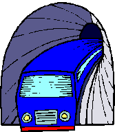

Hoe is Els_Vilars te bereiken;
Het vakantie huis bevindt zich boven op de berg Puig Rom en is daarom alleen goed bereikbaar met; een auto, motor en/of scooter.
Strand en winkels zijn dan binnen 10 minuten te bereiken. Een auto, motor of scooter huren voor de vakantie periode is tevens mogelijk.
Via Route du soleil reist u het snelst, echter de route via parijs is veel mooier.
Auto route berekenen bezoek: anwb en/of tomtom.
Reizen per vliegtuig, trein, bus of taxi naar Roses:
Luchthaven Girona-Costa Brava op 60 Km van Roses is te bereiken vanuit Nederland met
de vluchten via; ryanair of van transavia Luchthaven Bacelona op 165 Km van Roses met transavia of klm
(vanuit Barcelona neemt u dan de trein naar Figueres en vervolgens neemt u de bus tot Roses)
Vluchten op luchthaven Perpignan +/- 75 km van Roses met kunt u ook nemen via ryanair
vervolgens neemt u de bus tot Roses.
(vervolgens rechtstreekse bus naar Roses Tel: 972.15.05.85
of; trein tot Figueres en vervolgens bus tot Roses (Sarfa tours)
 Trein:
Dichts bijzijnde stations vanaf Roses is Figueres op 17 km.
Riezen met de trein naar Girona Sants of Barcelona Sants bezoek de website: renfe.com en
van Barcelona Sants naar de Airport gaat een trein om het half uur.
Met de bus kunt u vanaf het treinstation; Girona en Figueres verder naar Roses.
Autobus:
Rechtstreeks van Barcelona naar Roses (Sarfa tours)
(Voor inlichtingen: Tel. Sarfa tours Estacio d'autobus Roses 972.15.05.85)
Aeroport de Girona Marquesina al costat de l'Edifici Terminal
Lokaal vervoer in Roses:
Autobús
(Viñolas)-Tel: 972 25.62.15
Taxis Francisco López-Tel: 972 15.10.25